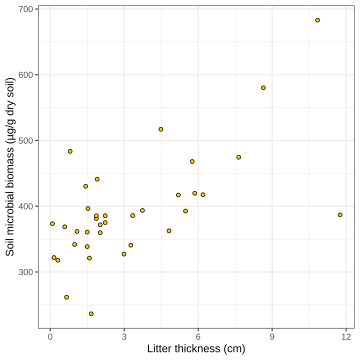
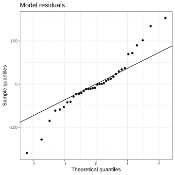
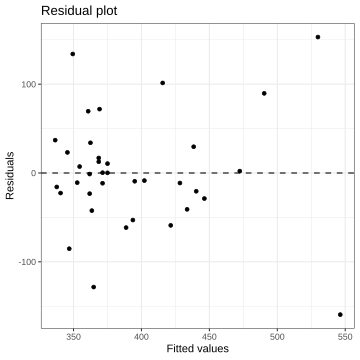
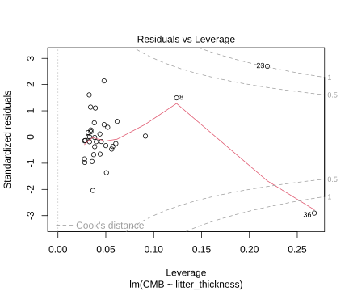
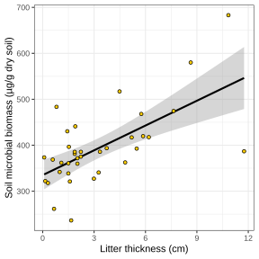
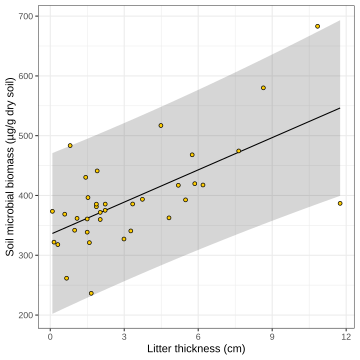

![]()
Show me the code
library(readxl)
library(tidyverse)The goal of this tutorial is to understand and apply linear regression models to examine the relationship between two numerical variables: a dependent variable (y) and an independent variable (x). We will learn how to represent this relationship using a mathematical equation to predict y from x, estimate the model coefficients, and test the statistical significance of the model. In addition, we will evaluate how much variation in y is explained by the model using R² (coefficient of determination). Finally, we will check whether the assumptions underlying linear regression are satisfied.
Let’s get started!
To work on this tutorial, you will need to load the readxl and tidyverse packages.
library(readxl)
library(tidyverse)Start by importing the data used in this course (see previous tutorials).
#Option 1 (csv file)
data <- read_csv("gss_statistics_master_data_set2.csv")
#Option 2 (Excel file)
data <- read_excel("gss_statistics_master_data_set2.xlsx")Linear regression is a statistical method used to model the relationship between a response variable (which is usually numeric) and a number of predictor variables. In the simplest case, it involves one response variable (\(y\)) and one predictor variable (\(x\)). The goal is to model how changes in \(x\) are associated with changes in \(y\) by fitting a straight line to the data. This relationship is expressed with Equation 1.
\[ y=\beta_0+\beta_1x+\epsilon \tag{1}\] this equation, \(\beta_0\) is the intercept and \(\beta_1\) is the slope. \(\epsilon\) is the model residual (error).
The intercept (\(\beta_0\)) represents the predicted value of \(y\) when \(x\) is equal to zero. It is the point where the regression line crosses the y-axis.
The slope (\(\beta_1\)) represents the change in \(y\) associated with a one-unit increase in \(x\). It describes both the direction and the strength of the relationship: if the slope is positive, \(y\) increases as \(x\) increases; if it is negative, \(y\) decreases as \(x\) increases.
ANOVA (Analysis of Variance) is a special case of linear regression. In ANOVA, the predictor variable is categorical (for example, treatment groups), while the response variable is numerical. When we express the categorical predictor using dummy variables (see lecture for an example of this), the ANOVA model becomes a linear regression model. Both approaches use the same underlying framework: they partition the total variation in the response variable into variation explained by the model and unexplained (residual) variation. Therefore, ANOVA and linear regression are mathematically equivalent.
To guide us through this tutorial, we need a research question to work on. In this tutorial, we will focus on the relationship between litter thickness (x, predictor variable) and microbial biomass (y, response variable). One possible hypothesis could be that we expect to find a positive relationship between these two variables, i.e., that soil microbial biomass would increase with litter thickness.
As usual, let’s start by visualizing this relationship. A scatter plot is the ideal solution here, as the two variables we are interested in are continuous.
litter_thickness, x-axis) and soil microbial biomass (MCB, y-axis).cor.test() to calculate Pearson’s correlation coefficient to quantify the strength of the linear relationship between litter thickness (litter_thickness) and soil microbial biomass (CMB).ggplot(data = data, mapping = aes(x = litter_thickness,
y = CMB)) +
geom_point(shape=21,
fill = "#FFCD00", #Fill colour for shape
colour = "black")+ #Border colour for shape
xlab("Litter thickness (cm)")+ #Change name of x axis
ylab("Soil microbial biomass (µg/g dry soil)")+ #Change name of y axis
theme_bw() #This creates a black/white plot
cor.test(x = data$litter_thickness,
y = data$CMB)
Pearson's product-moment correlation
data: data$litter_thickness and data$CMB
t = 4.8458, df = 34, p-value = 2.72e-05
alternative hypothesis: true correlation is not equal to 0
95 percent confidence interval:
0.3931681 0.7997484
sample estimates:
cor
0.6391455 The scatter plot shows a positive relationship between litter thickness and soil microbial biomass. This corresponds to the positive value of Pearson’s correlation coefficient, which is significantly different from zero (p < 0.001).
Fitting a simple linear regression means using raw data to estimate the intercept and slope coefficients in Equation 1. The most common method used is ordinary least squares (OLS). The idea behind OLS is simple: for each data point, we calculate the residual, which is the difference between the observed value and the predicted value from the linear model. Some points lie above the line and some below it, so instead of adding residuals directly (which could cancel out), we square them. Ordinary least squares then selects the slope and intercept that minimize the sum of these squared residuals. By minimizing the total squared differences between observed and predicted values, OLS finds the line that best represents the overall linear trend in the data.
Using the OLS approach, the slope (\(\beta_1\)) and intercept (\(\beta_0\)) of the linear model are estimated using Equation 2 and Equation 3, respectively.
\[ \beta_1=\frac{\sum_{i=1}^n(x_i-\bar{x})(y_i-\bar{y})}{\sum_{i=1}^n(x_i-\bar{x})^2} \tag{2}\]
\[ \beta_0=\bar{y}-\beta_1\bar{x} \tag{3}\]
In these equations, \(x_i\) and \(y_i\) are observations of variables \(X\) and \(Y\), while \(\bar{x}\) and \(\bar{y}\) are the average values of variables \(X\) and \(Y\).
litter_thickness) and soil microbial biomass (CMB).litter_thickness) and soil microbial biomass (CMB).slope <- sum((data$litter_thickness-mean(data$litter_thickness))*(data$CMB-mean(data$CMB)))/sum((data$litter_thickness-mean(data$litter_thickness))^2)The slope of the relationship between litter thickness and soil microbial biomass is 17.98 µg/g dry soil/cm.
intercept <- mean(data$CMB) - slope*mean(data$litter_thickness)The intercept of the relationship between litter thickness and soil microbial biomass is 334.94 µg/g dry soil.
In R, you can easily fit a simple linear regression model using the lm() function. This function consists of two important arguments:
formula: a formula specifying the model. The formula must have the following form: response ~ predictor.
data: a data frame in which the variables specified in the formula will be found.
After fitting a linear model, the summary() function provides a detailed overview of the results. It reports the estimated regression coefficients (intercept and slope), together with their standard errors, which reflect the uncertainty around these estimates. The p-values associated with each coefficient test the null hypothesis that the true coefficient is equal to zero. The output also includes several measures of overall model fit. The residual standard error gives an idea of how far the observed values deviate from the fitted line. The Multiple R-squared and Adjusted R-squared values describe the proportion of variation in the response variable explained by the model, with the adjusted version accounting for the number of observations and the number of predictors included in the model. Finally, the F-statistic and its p-value test whether the model as a whole explains a significant amount of variation in the response.
When the anova() function is applied to an lm() object in R, it produces an analysis of variance (ANOVA) table for the fitted linear model. The output is then very similar to a one-way ANOVA table (see tutorial 5). This table partitions the total variation in the response variable into components attributable to the model (explained variation) and to the residuals (unexplained variation). The output typically includes the degrees of freedom (Df), sum of squares (Sum Sq), mean squares (Mean Sq), F-values, and associated p-values. The sum of squares measures how much variation is explained by each term in the model and how much remains in the residuals. The mean square is obtained by dividing the sum of squares by the corresponding degrees of freedom. The F-statistic compares the variation explained by the model (or by a specific predictor) to the unexplained variation, and the p-value indicates whether this explained variation is statistically significant.
lm() to model the relationship between litter thickness (litter_thickness, x-axis) and soil microbial biomass (CMB, y-axis). Store the model into an R object called model.summary() on the model object and inspect the summary table. Make sure you understand the information contained in this output.anova() on the model object and inspect the ANOVA table. Make sure you understand the information contained in this output.model <- lm(CMB ~ litter_thickness,
data)summary(model)
Call:
lm(formula = CMB ~ litter_thickness, data = data)
Residuals:
Min 1Q Median 3Q Max
-159.507 -24.644 -4.868 24.798 153.109
Coefficients:
Estimate Std. Error t value Pr(>|t|)
(Intercept) 334.938 16.204 20.670 < 2e-16 ***
litter_thickness 17.983 3.711 4.846 2.72e-05 ***
---
Signif. codes: 0 '***' 0.001 '**' 0.01 '*' 0.05 '.' 0.1 ' ' 1
Residual standard error: 64.2 on 34 degrees of freedom
Multiple R-squared: 0.4085, Adjusted R-squared: 0.3911
F-statistic: 23.48 on 1 and 34 DF, p-value: 2.72e-05anova(model)Analysis of Variance Table
Response: CMB
Df Sum Sq Mean Sq F value Pr(>F)
litter_thickness 1 96797 96797 23.482 2.72e-05 ***
Residuals 34 140156 4122
---
Signif. codes: 0 '***' 0.001 '**' 0.01 '*' 0.05 '.' 0.1 ' ' 1From the summary and anova tables, we get the information that the fitted linear model has the following equation:
\[ CMB=17.98\times{litterthickness}+334.94 \]
Both regression coefficients (slope and intercept) are significantly different from zero (p < 0.001). The model explains 39.1% (adjusted R2) of the variation in soil microbial biomass (CMB) and is statistically significant (F(1,34) = 23.48, p < 0.001).
After fitting a linear model, you can check whether the normality assumption is met by examining whether the model residuals are approximately normally distributed. This can be done by (1) using the residuals() function on the model object to extract the model residuals (i.e. the differences between observed values and model predictions), (2) applying a Shapiro-Wilk test to the residuals, and (3) creating a Q-Q plot using model residuals.
residuals() function on the model object. Store these residuals in a new column (CMB_residuals) in the data object.data$CMB_residuals <- residuals(model)shapiro.test(data$CMB_residuals)
Shapiro-Wilk normality test
data: data$CMB_residuals
W = 0.95874, p-value = 0.1965ggplot(data, aes(sample = CMB_residuals)) +
stat_qq() +
stat_qq_line() +
theme_bw() +
xlab("Theoretical quantiles")+
ylab("Sample quantiles")+
ggtitle("Model residuals")
The p-value of the Shapiro-Wilk test is greater than the significance threshold (0.05). Therefore, we fail to reject the null hypothesis that the model residuals are normally distributed. This result is partly supported by the Q-Q plot, in which most points lie close to the reference line (it is worth noting that some extreme quantile values seem to deviate from the reference line).
After fitting a linear model, you can check the homoscedasticity assumption by creating a residual plot.
A residual plot shows the model residuals plotted against the fitted values. A residual is the difference between an observed value and the value predicted by the model. The fitted value is simply the value predicted by the model for that observation. Each point in the residual plot represents one observation. Its horizontal position shows the fitted value, while its vertical position shows the residual, indicating how far that observation lies above or below the model prediction.
Residual plots are used to assess the assumption of homoscedasticity, which means that the variance of the residuals is constant across the range of fitted values. If this assumption is met, the residuals should be randomly scattered around zero with no clear pattern and a roughly constant spread. In contrast, patterns such as a funnel shape (increasing or decreasing spread) would indicate heteroscedasticity, suggesting that the assumption of equal variances may be violated.
To create a residual plot, we first need to extract model residuals (residuals()) and fitted values (fitted()). We already extracted the model residuals earlier (CMB_residuals column).
fitted() function on the model object. Store these values in a new column (CMB_fitted) in the data object.data$CMB_fitted <- fitted(model)ggplot(data, aes(x = CMB_fitted,
y = CMB_residuals)) +
geom_point() + #Add points to the plot
geom_hline(yintercept = 0,
linetype = "dashed")+ #Add horizontal dashed line at y=0
theme_bw() +
xlab("Fitted values")+
ylab("Residuals")+
ggtitle("Residual plot")
The residuals are well scattered around zero. There is no clear systematic pattern, such as a funnel shape, that would indicate heteroscedasticity. This suggests that the assumption of homoscedasticity is reasonably met.
A plot of residuals versus leverage is commonly used to identify influential observations in a linear regression model. In this plot, the leverage values (which measure how far an observation’s predictor value is from the mean of the predictor) are shown on the x-axis, and the standardized residuals are shown on the y-axis.
Observations are potentially influential if they combine high leverage with large residuals. High leverage alone does not necessarily make a point influential, and neither does a large residual on its own. However, a data point that lies far to the right (high leverage) and far from zero vertically (large residual) can have a strong impact on the estimated regression coefficients. Such points are often highlighted using contours of Cook’s distance in the plot. Observations that lie beyond these contours should be examined carefully (especially if Cook’s distance is larger than 1), as they may disproportionately affect the fitted model and its conclusions.
In R, you can easily create such a graph using plot(model, which=5). The which argument specifies the type of plot we want to create (here, a residuals vs leverage plot).
model).plot(model, which = 5)
Observations 23 and 36 stand out due to their comparatively high leverage and large residuals. In addition, both have Cook’s distance values greater than 1, indicating that they may exert a strong influence on the estimated regression coefficients. Such observations can disproportionately affect the fitted model and should therefore be examined carefully (i.e., are they measurement or encoding errors?).
The goodness of fit of a linear regression model (i.e., how well the model explains the observed data) can be quantified by the coefficient of determination (R2) (Equation 4). R2 measures the proportion of the total variability in the response variable (\(SS_{tot}\)) that is explained by the predictors included in the model (\(SS_{reg}\)). For example, an R2 of 0.70 indicates that 70% of the variation in the outcome is accounted for by the linear relationship specified in the model.
\[ R^2=\frac{SS_{reg}}{SS_{tot}}=\frac{SS_{reg}}{SS_{reg}+SS_{res}} \tag{4}\]
However, R2 has an important limitation: it never decreases when additional predictors are added, even if those predictors are only weakly or not at all related to the response variable. As a result, it may overstate the improvement in model fit when unnecessary variables are included.
The adjusted coefficient of determination (adjusted R2) addresses this issue by accounting for both the sample size (\(n\)) and the number of predictors (\(p\)) in the model (Equation 5). By incorporating a penalty for model complexity, adjusted R2 increases only if a newly added predictor improves the model sufficiently. Unlike the unadjusted R2, it can decrease when an irrelevant predictor is added, making it a more reliable measure for comparing models with different numbers of predictors.
\[ adjusted \space R^2=1-\frac{(1-R^2)(n-1)}{n-p-1} \tag{5}\]
CMB_fitted) and the overall mean calculated from the data.CMB) and model predictions (CMB_fitted).SSreg <- sum((data$CMB_fitted-mean(data$CMB))^2)SSres <- sum((data$CMB_fitted-data$CMB)^2)R2 <- SSreg/(SSreg+SSres)n <- nrow(data)
p <- 1
adjR2 <- 1-((1-R2)*(n-1)/(n-p-1))The fastest way to obtain the values of both the unadjusted and adjusted R2 is to apply the summary() function to the fitted model object (see Solution 2 of Exercise 3).
After fitting the linear model, we obtained the following equation:
\[ CMB=17.98\times{litterthickness}+334.94 \]
To predict the soil microbial biomass for a litter thickness of 6 cm, we simply substitute this value into the equation:
\[ CMB=17.98\times6+334.94=442.82 \]
Thus, the model predicts a soil microbial biomass of 442.82 µg/g dry soil for a litter thickness of 6 cm.
While calculating the predicted value is straightforward, it is equally important to quantify the uncertainty associated with this estimate. In linear regression, this uncertainty can be described using two different types of intervals: a 95% confidence interval (Equation 6) and a 95% prediction interval (Equation 7).
A 95% confidence interval provides a range of plausible values for the mean soil microbial biomass at a litter thickness of 6 cm. In Equation 6 and Equation 7, \(\hat{y}\) is the predicted soil microbial biomass value, \(t\) is a quantile value from a Student’s t distribution with \(n-2\) degrees of freedom, \(MS_{res}\) is the residual mean squares, \(n\) is the total number of observations, \(x\) is the litter thickness value for which we calculated a prediction (in this case: 6 cm), and \(\bar{x}\) is the average litter thickness measured across all observations.
\[ CI=\hat{y} \pm t_{1-\frac{\alpha}{2},n-2}\sqrt{MS_{res}(\frac{1}{n}+\frac{(x-\bar{x})^2}{\sum_{i=1}^{n}(x_i-\bar{x})^2})} \tag{6}\]
A 95% prediction interval, in contrast, provides a range of plausible values for a single new observation at 6 cm litter thickness. The prediction interval is always wider than the confidence interval.
\[ PI=\hat{y} \pm t_{1-\frac{\alpha}{2},n-2}\sqrt{MS_{res}(1+\frac{1}{n}+\frac{(x-\bar{x})^2}{\sum_{i=1}^{n}(x_i-\bar{x})^2})} \tag{7}\]
n <- nrow(data)
x <- 6
y <- slope*6+intercept
MSres <- SSres/(n-2)
t <- qt(0.975, n-2)
#Calculate the lower boundary of the 95% confidence interval
lower_CI <- y - t*sqrt(MSres*((1/n)+((x-mean(data$litter_thickness))^2/(sum((data$litter_thickness-mean(data$litter_thickness))^2)))))
#Calculate the upper boundary of the 95% confidence interval
upper_CI <- y + t*sqrt(MSres*((1/n)+((x-mean(data$litter_thickness))^2/(sum((data$litter_thickness-mean(data$litter_thickness))^2)))))The 95% confidence interval around the soil microbial biomass value predicted for a litter thickness of 6 cm is [412.9, 472.7] µg/g dry soil.
n <- nrow(data)
x <- 6
y <- slope*6+intercept
MSres <- SSres/(n-2)
t <- qt(0.975, n-2)
#Calculate the lower boundary of the 95% prediction interval
lower_PI <- y - t*sqrt(MSres*(1+(1/n)+((x-mean(data$litter_thickness))^2/(sum((data$litter_thickness-mean(data$litter_thickness))^2)))))
#Calculate the upper boundary of the 95% prediction interval
upper_PI <- y + t*sqrt(MSres*(1+(1/n)+((x-mean(data$litter_thickness))^2/(sum((data$litter_thickness-mean(data$litter_thickness))^2)))))The 95% prediction interval around the soil microbial biomass value predicted for a litter thickness of 6 cm is [309, 576.7] µg/g dry soil.
To make predictions from a fitted linear model in R, you typically use the predict() function. This function takes three main arguments:
object: a linear model object (in our case: model)
newdata: an optional data frame containing values of the predictor variable for which predictions should be made. If omitted, predict() will return the fitted values (same output as the fitted() function). Use the same column names as in the original data.
interval: the type of interval to be calculated. Can be either "none", "confidence", or "prediction".
The predict() function returns an output with 3 columns: fit (the soil microbial biomass value predicted by the model), lwr (the lower boundary of the 95% confidence or prediction interval), and upr (the upper boundary of the 95% confidence or prediction interval).
predict() function to compute the lower and upper limits of the 95% confidence intervals for the soil microbial biomass values predicted by the linear model at litter thicknesses of 3, 6, and 9 cm.predict() function to compute the lower and upper limits of the 95% prediction intervals for the soil microbial biomass values predicted by the linear model at litter thicknesses of 3, 6, and 9 cm.predict(model,
newdata=data.frame(litter_thickness=c(3,6,9)),
interval="confidence") fit lwr upr
1 388.8863 367.0382 410.7345
2 442.8343 412.9342 472.7343
3 496.7822 448.4660 545.0984predict(model,
newdata=data.frame(litter_thickness=c(3,6,9)),
interval="prediction") fit lwr upr
1 388.8863 256.5902 521.1825
2 442.8343 308.9727 576.6959
3 496.7822 357.6442 635.9202We can plot our fitted linear model by adding a new layer to the scatter plot we created in the first exercise. We will use the geom_smooth() function to do this. To plot the linear model with its 95% confidence interval, the syntax is as follows:
geom_smooth(method="lm", se=TRUE)
The arguments have the following meaning:
method = "lm" tells R to fit a linear model (using lm()) to the data.
se = TRUE specifies that the 95% confidence interval should be displayed.
To plot a fitted linear regression model together with its 95% prediction interval, you need to compute the interval manually, since geom_smooth() only provides confidence intervals. After fitting the linear model, you will need to create a new data frame containing the predictor values for which you want predictions (often a sequence covering the observed range). Use the predict() function with interval = "prediction" to obtain the fitted values as well as the lower and upper bounds of the 95% prediction interval. Finally, add the results to the plot: draw the regression line with geom_line() and display the prediction interval as a shaded band using geom_ribbon() (mapping ymin to the lower bound and ymax to the upper bound).
Let’s try both options!
CMB as a function of litter_thickness) and the fitted linear model surrounded by its 95% confidence interval.CMB as a function of litter_thickness) and the fitted linear model surrounded by its 95% prediction interval.ggplot(data = data, mapping = aes(x = litter_thickness,
y = CMB)) +
geom_smooth(method="lm",
se=TRUE,
colour="black")+ #Add regression line and 95% confidence interval
geom_point(shape=21,
fill = "#FFCD00", #Fill colour for shape
colour = "black")+ #Border colour for shape
xlab("Litter thickness (cm)")+ #Change name of x axis
ylab("Soil microbial biomass (µg/g dry soil)")+ #Change name of y axis
theme_bw() #This creates a black/white plot
#Make predictions for 100 values of litter thickness
#Make predictions between the minimum and maximum values of litter thickness
#Store predictions in a new R object
pred <- data.frame(litter_thickness = seq(from=min(data$litter_thickness),
to=max(data$litter_thickness),
length.out=100))
pred <- cbind(pred, predict(model,
newdata = pred,
interval = "prediction"))
#Rename the second column (from fit to CMB) to keep the same variable names
colnames(pred)[2] <- "CMB"
#Create scatter plot
ggplot(data = data, mapping = aes(x = litter_thickness,
y = CMB)) +
geom_ribbon(data=pred, #Add shaded area for the 95% prediction interval
aes(ymin = lwr,
ymax = upr),
alpha=0.2)+ #alpha is an argument used to adjust the transparency level of a colour. Lower values means more transparent. It has nothing to do with the significance level of a test.
geom_line(data = pred,
colour="black")+ #Add the fitted linear model
geom_point(shape=21,
fill = "#FFCD00", #Fill colour for shape
colour = "black")+ #Border colour for shape
xlab("Litter thickness (cm)")+ #Change name of x axis
ylab("Soil microbial biomass (µg/g dry soil)")+ #Change name of y axis
theme_bw() #This creates a black/white plot